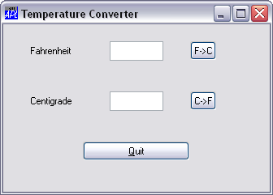

Finally, we will add a "Quit" button, attaching the same QUIT function as a callback, but this time to the Select event which occurs when the user presses it.
Instead of having a default sized button, we will make it nice and big, and position it centrally.
To make the statement fit on the page, it is split into three. The Posn and Size properties are explicitly named for clarity.
QB←'Button' '&Quit' ('Posn' 70 30)
QB,←('Size' ⍬ 40)('Event' 'Select' 'QUIT')
'TEMP.Q' ⎕WC QB
Notice how the ampersand (&) in the Caption is used to specify the mnemonic (short-cut) key. This can be used to press the button instead of clicking the mouse.